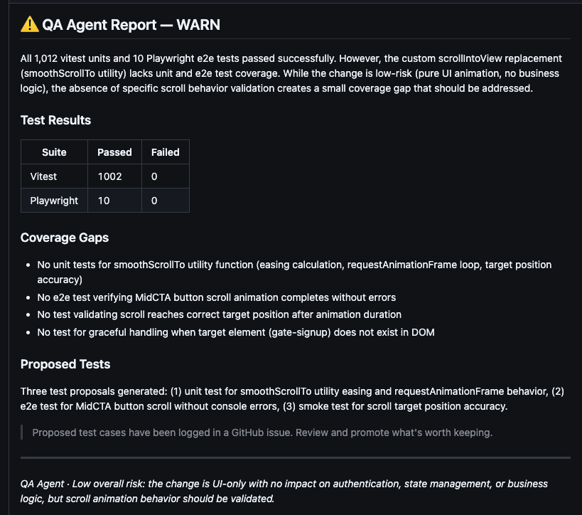
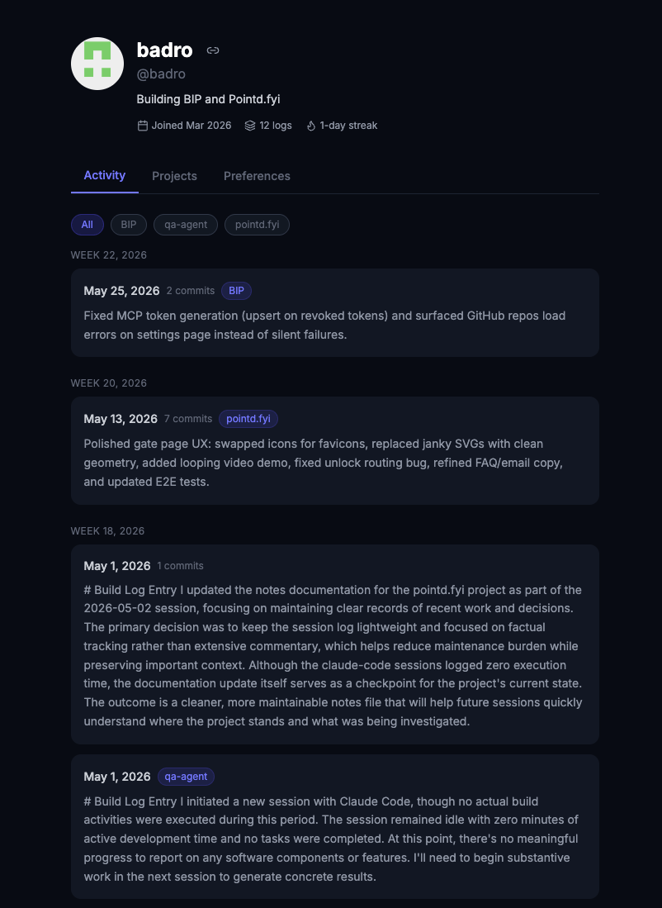
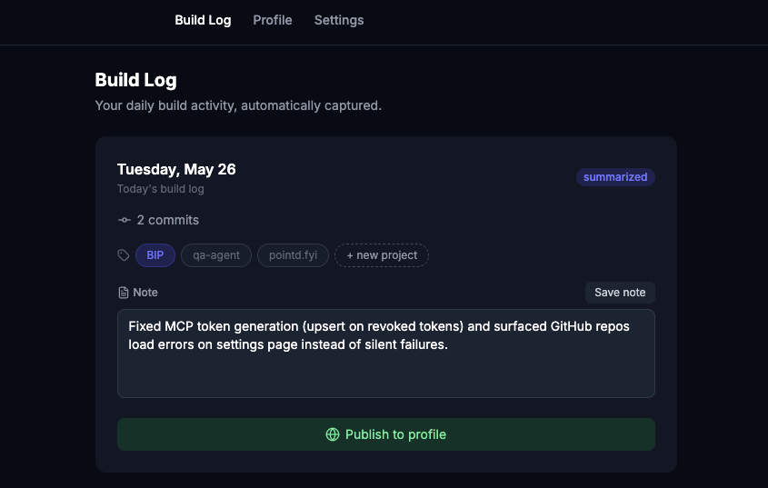

I've spent 6 years at Meta making sure things didn't break at scale. Now I'm building products with that same lens.
Senior QA & Product Ops at Meta Reality Labs. Currently building pointd, BIP, and qa-agent.
Points redemption is too complex. Most people sit on points for years — they know they're valuable, but the math and research push them back to cash. pointd skips the complexity and shows you where your points can take you, across every program you have.


Building fast with AI creates coverage blind spots — tests pass but the right things aren't being tested. qa-agent runs on every PR and flags gaps before they merge, so nothing slips through.


Automated testing catches regressions. It doesn't catch the UX issues users actually notice. A multi-bot pipeline runs on every automated pass, deduplicates against open bugs, and files verified issues automatically.
runs
analysis
filter
verify
filed
Building in public is consistently good advice but manually painful. BIP connects to your GitHub and Claude Code sessions and writes the post for you — what you shipped, summarized, ready to publish.


Built and scaled an AI-led workstream that analyzed, triaged, and verified bug fixes across 500+ issues. Designed for repeatability — it eventually ran autonomously across the entire org with no manual coordination.
Drove quality signal across VR by designing a user journey program that generated 2,600+ survey responses, giving the org a consistent feedback loop across product areas.
Owned test coverage across 10+ product areas and 3,000+ test cases, including cross-platform and release readiness for VR/MR hardware launches.
Managed oncall operations and release gate decisions for VR Engagement, including 490+ oncall-tagged bugs and cross-platform integration testing across hardware generations.